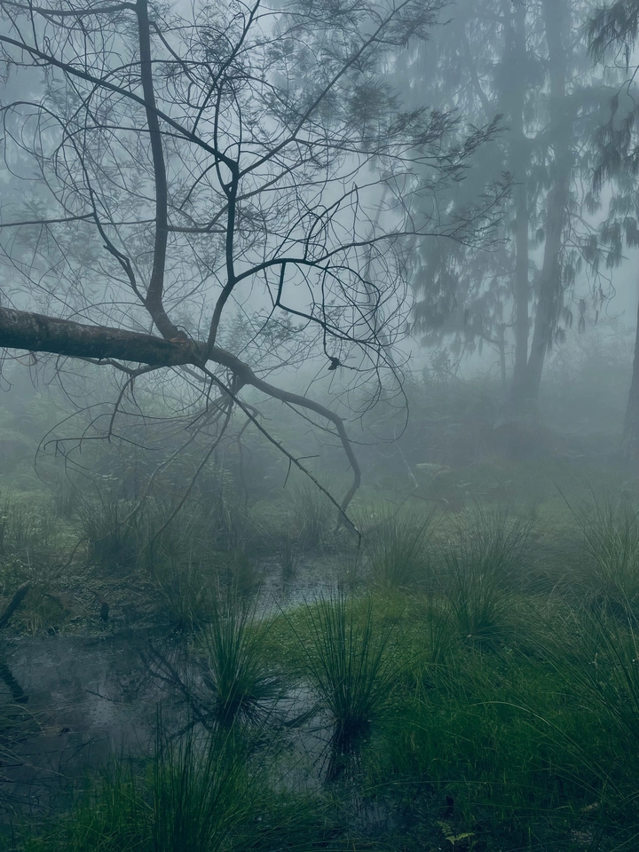
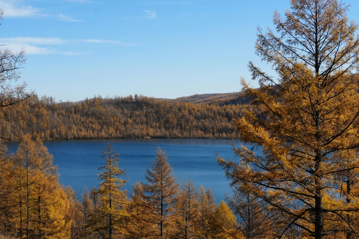
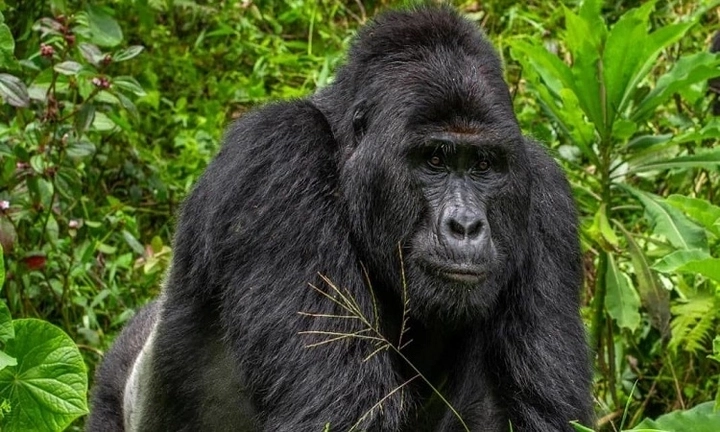
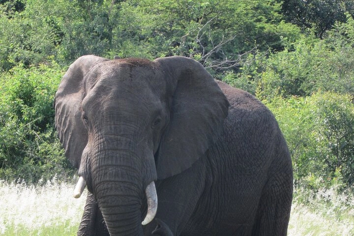

Khám phá rừng nguyên sinh Bwindi Impenetrable
Ẩn mình giữa những ngọn núi phía tây nam Uganda, rừng Bwindi Impenetrable là một trong những rừng mưa núi cao nguyên nguyên sinh cuối cùng còn tồn tại trên thế giới.
Với thảm thực vật phong phú, khí hậu mù sương đặc trưng và hệ sinh thái đa dạng, Bwindi không chỉ là nơi sinh sống của khỉ đột núi quý hiếm mà còn là một trong những viên ngọc sinh học của châu Phi.
Hôm nay hãy cùng TrithucWorld Khám phá rừng Bwindi và hành trình kết hợp giữa khoa học, bảo tồn và trải nghiệm du lịch sinh thái, giúp chúng ta hiểu rõ hơn về giá trị của những rừng nguyên sinh hiếm hoi còn sót lại trên Trái Đất.
1. Giới thiệu tổng quan về rừng Bwindi Impenetrable
Rừng Bwindi Impenetrable nằm sát biên giới Rwanda, trải dài trên diện tích khoảng 331 km², là một trong những rừng mưa núi cao nguyên nguyên sinh còn sót lại hiếm hoi ở châu Phi. Với thảm thực vật phong phú và cảnh quan rậm rạp, khu rừng này mang vẻ đẹp hoang sơ, gần như chưa bị tác động nhiều bởi con người.
UNESCO đã công nhận Bwindi là Di sản Thiên nhiên Thế giới, không chỉ vì tính độc đáo của hệ sinh thái mà còn bởi vai trò quan trọng trong việc bảo tồn các loài động vật quý hiếm, đặc biệt là khỉ đột núi.

Rừng Bwindi còn là minh chứng sống cho sự phát triển lâu dài của tự nhiên, với hàng triệu năm tiến hóa, nơi đây lưu giữ các loài thực vật và động vật mà ở nhiều khu vực khác đã bị tuyệt chủng. Sự phong phú và đa dạng này khiến Bwindi trở thành điểm đến hấp dẫn đối với các nhà khoa học, nhà bảo tồn và du khách yêu thiên nhiên.
2. Lịch sử và nguồn gốc của rừng
Bwindi đã tồn tại từ hàng triệu năm trước, hình thành trong thời kỳ băng hà cuối cùng, khi phần lớn châu Phi vẫn được bao phủ bởi rừng nguyên sinh. Sự cách biệt địa lý, địa hình núi cao và lớp sương mù dày đặc đã giúp rừng này tránh được sự tác động mạnh mẽ từ con người, giữ nguyên cấu trúc sinh thái tự nhiên.
Qua hàng thiên niên kỷ, khu rừng trở thành môi trường sống lý tưởng cho nhiều loài thực vật và động vật đặc hữu. Nhiều cây cổ thụ ở Bwindi có tuổi đời lên tới hàng trăm năm, cung cấp nguồn thức ăn và nơi trú ẩn cho các loài sinh vật từ chim đến động vật có vú.
Sự tồn tại lâu dài của rừng Bwindi còn là minh chứng cho khả năng thích nghi và phát triển bền vững của tự nhiên, nơi mỗi sinh vật đều đóng vai trò quan trọng trong hệ sinh thái phức tạp và cân bằng.
3. Đặc điểm địa lý và khí hậu
Rừng Bwindi nằm trên độ cao từ 1.160 đến 2.607 mét so với mực nước biển, tạo nên địa hình núi cao xen lẫn thung lũng sâu. Điều kiện này khiến rừng có nhiều lớp sinh cảnh khác nhau, từ rừng núi thấp, rừng mưa dày đặc đến các sườn núi với cây bụi và dây leo rậm rạp.
Khí hậu ở đây quanh năm ẩm ướt, sương mù dày đặc, mưa lớn và nhiệt độ tương đối ổn định, giúp duy trì thảm thực vật đa dạng. Các loài cây cổ thụ, dây leo khổng lồ và hoa nhiệt đới phát triển tốt nhờ độ ẩm cao và đất giàu dinh dưỡng.

Nguồn nước dồi dào từ mưa và suối rừng cũng tạo môi trường thuận lợi cho động vật sinh sống. Nhiều loài chim, động vật có vú và côn trùng phụ thuộc vào khí hậu đặc thù này để sinh sản, tìm kiếm thức ăn và bảo vệ lãnh thổ.
4. Hệ sinh thái và đa dạng sinh học
Bwindi là nơi sinh sống của hơn 350 loài chim, 120 loài động vật có vú và hàng nghìn loài thực vật, tạo nên một hệ sinh thái phức tạp và đa dạng. Từ cây bụi rậm rạp đến cây cổ thụ cao hàng chục mét, từng lớp thảm thực vật cung cấp môi trường sống cho các loài khác nhau.
Động vật trong rừng Bwindi thích nghi tốt với môi trường núi cao, từ các loài linh trưởng như khỉ đột, khỉ vàng, đến các loài mèo rừng và bò rừng. Chim chóc, côn trùng và các loài bò sát cũng góp phần duy trì cân bằng sinh thái.
Sự phong phú sinh học ở Bwindi không chỉ quan trọng về mặt khoa học mà còn là nguồn tài nguyên quý giá cho nghiên cứu sinh học, y học và bảo tồn, giúp các nhà khoa học hiểu rõ hơn về quá trình tiến hóa và thích nghi của các loài trong rừng núi cao nguyên.
5. Khỉ đột núi – báu vật của rừng Bwindi
Khỉ đột núi (Gorilla beringei beringei) là loài động vật biểu tượng của rừng Bwindi, với khoảng 400 cá thể sinh sống tại đây, chiếm gần một nửa tổng số khỉ đột núi trên thế giới. Đây là loài đặc hữu, nguy cơ tuyệt chủng cao, và việc bảo vệ chúng là ưu tiên hàng đầu của các nhà sinh thái học.
Du khách có thể trải nghiệm trekking để quan sát khỉ đột trong môi trường tự nhiên, nhưng tất cả các chuyến đi đều được quản lý nghiêm ngặt để giảm thiểu ảnh hưởng con người và đảm bảo an toàn cho cả du khách lẫn khỉ đột.

Khỉ đột núi đóng vai trò quan trọng trong hệ sinh thái, giúp lan truyền hạt, duy trì thảm thực vật và cân bằng môi trường. Sự hiện diện của chúng còn thu hút du lịch sinh thái, hỗ trợ kinh tế cộng đồng và nâng cao nhận thức toàn cầu về bảo tồn thiên nhiên.
6. Các loài động vật khác trong rừng
Ngoài khỉ đột núi, Bwindi là nơi sinh sống của voi rừng, trâu rừng, khỉ vàng, khỉ đuôi dài, lợn rừng và nhiều loài mèo nhỏ. Mỗi loài đóng vai trò quan trọng trong chuỗi thức ăn và duy trì cân bằng sinh thái, tạo nên một hệ sinh thái rừng nguyên sinh đa dạng và ổn định.
Rừng còn là nơi sinh sản của nhiều loài bò sát, ếch rừng, nhái và côn trùng phong phú, đóng góp vào vòng tuần hoàn sinh học và phân hủy hữu cơ. Nhiều loài chim quý hiếm sinh sống trong tán cây cổ thụ, đóng vai trò quan trọng trong lan truyền hạt giống và kiểm soát côn trùng gây hại.

Sự phong phú động vật này khiến Bwindi trở thành điểm đến hấp dẫn cho các nhà khoa học, nhà bảo tồn và du khách, đồng thời giúp nâng cao nhận thức về giá trị của rừng nguyên sinh đối với nhân loại.
7. Thảm thực vật và cây cổ thụ
Bwindi sở hữu hàng nghìn loài thực vật, từ cây cổ thụ hàng trăm năm tuổi đến dây leo khổng lồ, cây bụi rậm và hoa nhiệt đới rực rỡ. Tầng thực vật nhiều lớp tạo ra môi trường sống phong phú, giúp duy trì đa dạng sinh học và cân bằng hệ sinh thái.
Cây cổ thụ cung cấp thức ăn, nơi trú ẩn và hỗ trợ sinh sản cho các loài chim, khỉ đột và động vật nhỏ. Các dây leo khổng lồ giúp liên kết các tầng rừng, tạo ra mạng lưới sinh cảnh đa dạng.
Nhiều loài thực vật ở Bwindi còn được ứng dụng trong y học truyền thống và nghiên cứu sinh học, từ thảo dược chữa bệnh đến nguồn gen quý hiếm, góp phần bảo tồn di sản sinh học quý giá.
8. Du lịch sinh thái và bảo tồn
Bwindi phát triển du lịch sinh thái bền vững, nơi du khách trekking, quan sát khỉ đột và tìm hiểu hệ sinh thái mà không gây hại cho môi trường. Các chuyến đi trekking được giới hạn số lượng và giám sát nghiêm ngặt để giảm thiểu tác động con người và bảo vệ loài quý hiếm.
Du lịch còn kết hợp với giáo dục môi trường, nâng cao nhận thức của du khách về bảo tồn rừng nguyên sinh và khỉ đột núi. Các chương trình này hỗ trợ cộng đồng địa phương, tạo việc làm cho hướng dẫn viên Batwa và thúc đẩy phát triển kinh tế bền vững.
Nhờ mô hình này, Bwindi trở thành hình mẫu về du lịch sinh thái kết hợp bảo tồn, vừa mang lại giá trị khoa học, vừa nâng cao ý thức toàn cầu về tầm quan trọng của rừng nguyên sinh.
9. Vai trò của cộng đồng địa phương
Người Batwa, cư dân bản địa sống quanh rừng, có kiến thức truyền thống sâu sắc về rừng và thảo dược, truyền từ thế hệ này sang thế hệ khác. Họ tham gia quản lý rừng, hướng dẫn du khách và chia sẻ văn hóa, giúp bảo tồn giá trị sinh thái và văn hóa cùng lúc.
Sự tham gia của cộng đồng Batwa giúp bảo vệ môi trường sống cho khỉ đột và các loài quý hiếm khác, đồng thời tạo nguồn thu nhập ổn định từ du lịch sinh thái. Các dự án hợp tác giữa Batwa và tổ chức bảo tồn còn hỗ trợ giáo dục và phát triển kinh tế cộng đồng.
Qua đó, Bwindi không chỉ là khu rừng nguyên sinh quan trọng mà còn là nơi minh chứng cho sự gắn kết hài hòa giữa con người, thiên nhiên và bảo tồn bền vững.
10. Thách thức và tương lai của rừng Bwindi
Rừng Bwindi đang đối mặt với áp lực từ khai thác gỗ, nông nghiệp, dân số tăng và biến đổi khí hậu, đe dọa môi trường sống của khỉ đột và các loài quý hiếm. Nếu không có biện pháp bảo vệ, các giá trị sinh học và cảnh quan hoang sơ có thể bị mất đi vĩnh viễn.
Các biện pháp bảo tồn bao gồm du lịch sinh thái bền vững, giám sát chặt chẽ và hợp tác quốc tế, nhằm bảo vệ các loài quý hiếm và duy trì cân bằng sinh thái. Nghiên cứu khoa học và giáo dục cộng đồng cũng đóng vai trò quan trọng trong việc giảm thiểu tác động tiêu cực từ con người.
Nếu được bảo vệ tốt, Bwindi sẽ tiếp tục là viên ngọc quý của châu Phi, là nơi nghiên cứu, bảo tồn và trải nghiệm thiên nhiên độc đáo, đồng thời là hình mẫu cho các khu rừng nguyên sinh khác trên thế giới.